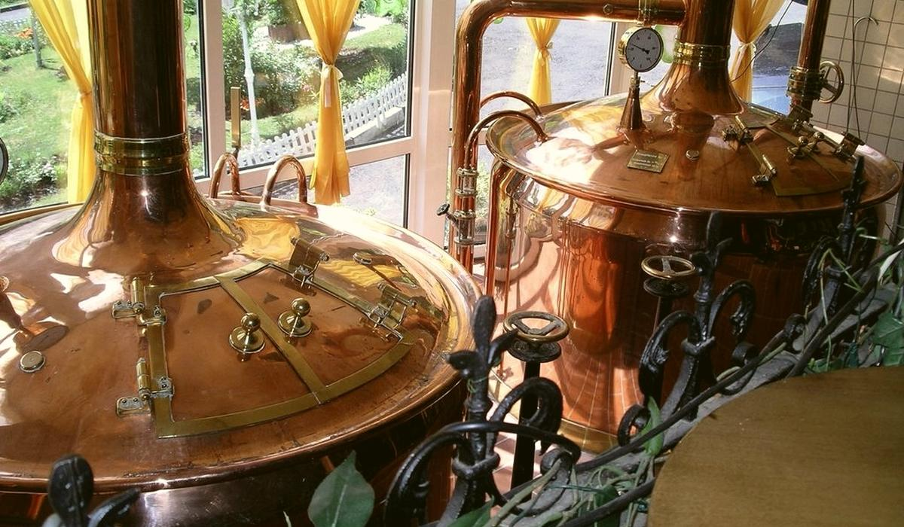
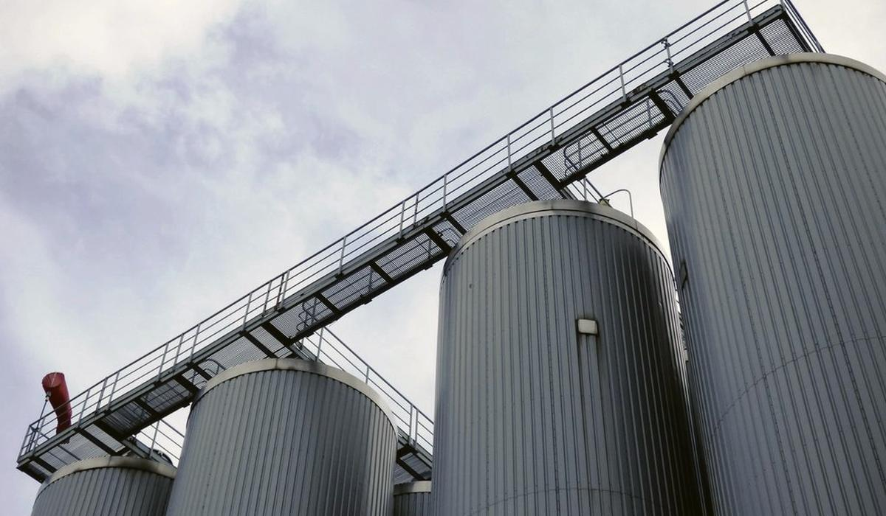

Generative AI for breweries, grounded in batch records with citations
A brewery copilot is only as good as the records it reads. Ground it in batch records, make it cite them and keep it away from the jobs that need a calculator.
What is generative AI good for in a brewery?
Generative AI for breweries means language models that read and write text: batch records, SOPs, deviation reports, shift handover notes, supplier certificates, complaint emails. A brewery produces a lot of this text. Almost nobody reads it twice. The deviation report from a stuck fermentation two summers ago is in a shared drive somewhere, written by someone who has since moved to packaging. When the same thing happens again, the team starts from zero.
That is the job a GenAI copilot does well. It finds what was written, pulls the relevant lines together and answers a plain question such as 'what did we do the last three times FV12 stalled above 3 °P?' It saves the hour a quality manager spends opening folders. It does not replace the quality manager.
- Brewhouse and cellar: search past batch records and deviations by symptom, tank, beer or yeast generation.
- Quality: draft a non-conformance summary from the lab results and the operator notes, for a person to check and sign.
- Packaging: pull every stoppage note for a filler and a date range into one readable list.
- Supply chain: compare a malt or hop certificate of analysis against the specification and flag what is out.
- Sales and finance: answer questions about volumes and margins by calling the governed numbers, not by estimating them.
How grounding in batch records with citations works
A grounded copilot does not answer from what the model learned in training. It retrieves the relevant records first, passes them to the model with the question and asks it to answer only from those records. The pattern is called retrieval augmented generation, or RAG. Each statement in the answer carries a citation back to the record it came from: the batch, the date, the document, the line.
The citation is the whole point in a regulated plant. A head brewer will not act on 'the diacetyl rest was probably short'. They will act on 'batch L2417, fermentation log, 14 March: temperature raised to 14 °C at 4.1 °P and cooled 22 hours later'. With the source on screen, they can check it in ten seconds. Without it, they should ignore the answer.
A brewery has two kinds of record. A copilot needs to ground in both. Documents, such as SOPs and deviation reports, are searched by meaning and quoted. Tables, such as gravity readings, lab results and packaging runs, are queried. For the second kind the safer pattern is for the model to write a read-only query against a governed model and show it. Microsoft's Fabric data agent works this way: it turns a question into a read-only SQL, DAX or KQL query against lakehouses, warehouses, semantic models or KQL databases, then shows the steps it took. The brewer sees the query behind the number, which is the table equivalent of a citation.
The main cloud platforms all document this pattern. Microsoft describes RAG with Azure AI Search as returning grounding data with citations. AWS documents Amazon Bedrock Knowledge Bases as able to include citations so the original source can be checked. Google describes grounding as connecting model output to verifiable sources with links. The platform matters less than the records. A copilot over messy, unjoined records gives tidy answers about the wrong batch.
A worked example: the question behind the question
Say a quality manager asks the copilot: 'Has our pale lager had high diacetyl before? What fixed it?' A grounded copilot breaks that into retrievals it can check:
- Find lab results for the pale lager where VDK was above the release limit.
- For each of those batches, pull the fermentation log around the diacetyl rest.
- Pull any deviation report or corrective action linked to the same batch numbers.
Suppose it finds four batches in three years. Two had the rest cut short when the cellar was full before a holiday. One had a slow yeast crop from a seventh generation. One has no explanation in the records at all. The honest answer says exactly that, cites all four and says the fourth is unexplained. A bad copilot fills the gap with a plausible reason. That fourth batch is where the trust is won or lost.
Now suppose the next question is 'how much would we lose if we hold the next batch two more days?' That is a calculation: tank days, beer volume, the next brew waiting for the vessel. It belongs in a tested formula over governed numbers. The copilot should call that formula and quote its result, not do the arithmetic itself. The split is simple to remember. Retrieval and citation for what happened. Formulas for what it costs. A person for what to do about it. Most of the disappointment I see with brewery chatbots comes from asking one tool to do all three.
Where generative AI should not be used in a brewery
Language models are fluent with numbers and not reliable with them. In a brewery, that gap has a price. These jobs should stay out of a GenAI copilot, or go through a deterministic calculation it can only call:
- Duty and excise figures. Volumes, strengths and returns must come from the registers and the defined formula. A wrong number here is a legal problem.
- Alcohol, gravity and blend maths. ABV, real extract, blend targets and recipe scaling have exact formulas. Use them.
- Release decisions. Whether a batch is fit to ship is a signed decision by a named person against a specification. A copilot can assemble the evidence. It does not release beer.
- Food safety and allergen claims. Allergen declarations and label wording come from approved records, never from a generated summary.
- Anything without a source. If the copilot cannot cite a record, the answer should be 'not in the records', said plainly.
A good test is to ask what happens if the answer is confidently wrong. If the cost is ten minutes of someone's time, GenAI is fine. If the cost is a recall, a duty assessment or a dumped tank, keep it to retrieval and citation, with a person deciding.
What to put in place before a brewery copilot
Get the records into one place with consistent batch numbers. Scan or transcribe the paper brew sheets that matter. Write down what the brewery means by its key terms, such as brewed volume versus packaged volume, so the copilot cannot mix them. Decide who can see what, because a copilot that respects permissions is the only kind a plant director will approve. Then test it on questions the team already knows the answers to, before anyone relies on it.
Beer365 takes this approach. It reads from your existing systems into one batch record inside your own Microsoft tenant and answers in plain English with the batch records cited. Calculations run through defined formulas. Questions it cannot ground get 'not in the records'.
Questions people ask
What is a GenAI copilot for a brewery?
It is a language model connected to the brewery's own records, such as batch records, SOPs and deviation reports, that answers plain-English questions by retrieving the relevant records and citing them. Brewers use it to find what happened before, not to make release decisions.
Can generative AI calculate ABV or excise duty?
It should not do the arithmetic itself. Language models can produce wrong numbers fluently. ABV, blend and duty figures should come from tested formulas over governed data, which a copilot can call and quote with the source.
How do you stop a brewery chatbot from making things up?
Ground it in retrieved records, require a citation for every statement and make it answer 'not in the records' when nothing supports an answer. Then test it on questions the team already knows the answers to.
Is it safe to put brewery data into generative AI?
It can be, if the model and the data stay inside the brewery's own cloud tenant, the copilot respects user permissions and nothing is used to train a public model. Check those three points with any vendor before connecting batch records.
Part of the Beer365 solution for across the whole brewery.
Keep reading
More on across the whole brewery
Where AI in brewing earns its keep across the whole brewery
AI in brewing works when it answers a question someone on the floor or in finance already asks. It fails when it starts with the model instead of the batch.

Across the whole breweryThe beer data your brewery already has and does not use
Most breweries do not need more data to start. Brew sheets, lab books, the historian, the ERP, the excise register and sales files already hold the answers. They just never meet.

Across the whole breweryHow to approach brewery data and AI on AWS if you already run there
If your brewery already runs on AWS, there is no reason to move to get value from its data. The hard work is the same on every cloud: one batch record and agreed definitions.
Bring one week of brew sheets
We will show you where the beer went, on a call, before anyone signs anything.
Or talk to Ankur directly: +91 7755 909445 · ankur.napa@disruptive-advantage.com